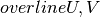
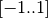
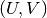
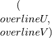

Sensor¶
- class pyvsim.Toolbox.Sensor[source]¶
This class describes a sensor. It is responsible for determining the size of the camera field of view and also for recording particles.
The particle recording behavior is similar to the one described by Lecordier and Westerweel in their synthetic image generator .
Some features can be easily implemented such as:
- Quantum efficiency as a function of wavelength (as the recording function
receives the wavelength as a parameter)
- Light field measurement (the “virtualData” field can be used to store
more data)
But were not implemented until now.
Methods
- clear()[source]¶
Initializes sensor with gaussian noise, the distribution parameters are given by:
- backgroundMeanLevel - the mean value
- backgroundNoiseVar - the variance of the distribution
To handle negative values, only the absolute value is taken into account
- createDeadPixels(probability)[source]¶
Creates a dead/hot pixel mapping for the sensor reading simulation
- display(colormap='jet')[source]¶
This function displays what is currently recorded in the camera sensor.
- parametricToPixel(coordinates)[source]¶
Transforms (normalized) parametric coordinates into pixel position on the sensor.
There is an inversion of the UV columns because of the unfortunate parametric coordinate system that maps:
u -> sensor.z v -> sensor.y
Parameters : coords : numpy.ndarray (N,3)
The position in the sensor in normalized coordinates (range -1..1)
Returns : pixels : numpy.ndarray (N,2)
The fractional position in sensor pixels in the format [row column]
DOES NOT CHECK IF OUTSIDE SENSOR BOUNDARIES!!! :
- parametricToSensor(param_coords)[source]¶
From the parametric coordinates , which range is , calculates the sensor coordinates in meters, so the algorithm is basically multiplying by the sensor size.
Parameters : param_coords : numpy.ndarray (N,2)
The parametric coordinates in the range -1..1.
Returns : sensor_coords : numpy.ndarray (N,2)
The sensor coordinates in meters
- physicalToPixel(coords)[source]¶
Transforms world coordinates into a position in the sensor, given in pixels
Parameters : coords : numpy.ndarray (N,3)
The position in world coordinates
Returns : pixels : numpy.ndarray (N,2)
The fractional position in sensor pixels in the format [row column]
DOES NOT CHECK IF OUTSIDE SENSOR BOUNDARIES!!! :
- readSensor()[source]¶
Returns the sensor reading in counts, creating quantization noise and saturating the signal where appropriate. This also simulates dead pixels, if there is a dead pixel mapping
The readout noise, however, should be included in the background noise property of the class
- recordParticles(coords, energy, wavelength, diameter, ignoreLarge=0.2)[source]¶
coords - [u,v] sensor coordinates of the recorded point energy - J - energy which is captured by the lenses wavelength - m - illumination wavelength diameter - m - particle image diameter
This is the front-end of the _recordParticle method, its main input is an array of sensor coordinates, representing the particle image centers.
The other inputs can be either arrays (e.g. for particle with varying diameters) or scalars (e.g. for all particles with same diameter). It is more or less obvious that the arrays must have the same length as the coordinate arrays.
Another issue is that the recording is much less efficient when particle image sizes varying size (the source of this issue is at the _recordParticles documentation). So some tricks (such as sorting by particle size) are used to reduce this effect. This procedure is made when the standard deviation exceeds 1/10th of the particle diameter (ajustable by the STD_PARAM constant at the beginning of the module).
Finally, as the recording itself is vectorized, but uses too much memory, it is made in steps. If you find problems too often, adjust the following constants at the header of this module:
MEMSIZE - maximum acceptable number of elements in a numpy.ndarray
MEM_SAFETY - factor of safety
- save(filename)[source]¶
Writes the sensor data in a 16-bit TIFF file (which is compatible with some mainstream PIV software)
Parameters : filename : string
The file name and path (including the extension)
- sensorToParametric(sensor_coords)[source]¶
Transform sensor coordinates  in meters to parametric coordinates, .
Parameters : param_coords : numpy.ndarray (N,2)
The parametric coordinates in the range -1..1.
Returns : sensor_coords : numpy.ndarray (N,2)
The sensor coordinates in meters
- sensorToPhysical(sensor_coords)[source]¶
Transform sensor coordinates in meters to world coordinates
Parameters : param_coords : numpy.ndarray (N,2)
The parametric coordinates in the range -1..1.
Returns : sensor_coords : numpy.ndarray (N,3)
The sensor coordinates in meters
- sensorToPixel(coords)[source]¶
Transforms (normalized) parametric coordinates into pixel position on the sensor.
There is an inversion of the UV columns because of the unfortunate parametric coordinate system that maps:
u -> sensor.z v -> sensor.y
Parameters : coords : numpy.ndarray (N,3)
The position in the sensor in normalized coordinates (range -1..1)
Returns : pixels : numpy.ndarray (N,2)
The fractional position in sensor pixels in the format [row column]
DOES NOT CHECK IF OUTSIDE SENSOR BOUNDARIES!!! :